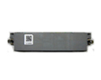
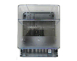
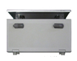
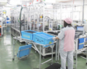
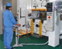

佐用工場は兵庫県の南西部に位置し、豊かな自然環境が残っている美しい町です。この地に昭和47年3月操業開始以来長きにわたり、機械式電力量計の製造を行ってきましたが、現在では、主にユニットケース・直結ユニットの製造を行っています。
地図はこちら
●ユニット式電力量計
直結ユニット組立
ユニットケース組立
●PHS-GW収容箱組立
●部品加工（プレス加工）

直結ユニット

ユニットケース

PHS-GW収容箱

ユニットケース組立

プレス加工
佐用工場は、1972年3月に開設し、2022年3月に50周年を迎えました。
これまでさまざまな形で当社の事業活動を支えて頂いたお客さまをはじめ、協力会社や取引先の皆さま、地域社会の皆さま、関係者の皆さまの長きにわたる多大のご支援の賜物であり、感謝申し上げます。
佐用工場では、工場開設以来、長きにわたり機械式計器の生産を行ってきましたが、2009年にはユニット式計器の外周部にあたるユニットケースの生産を開始し、2015年には本格的な自動化設備を導入するなど、生産性の向上を図り、現在の主力製品となりました。
今後も当社を取り巻く事業環境の変化に従業員全員が一丸となって取り組み、お客さまが満足される高品質な製品づくりに取り組んで参ります。
佐用工場長